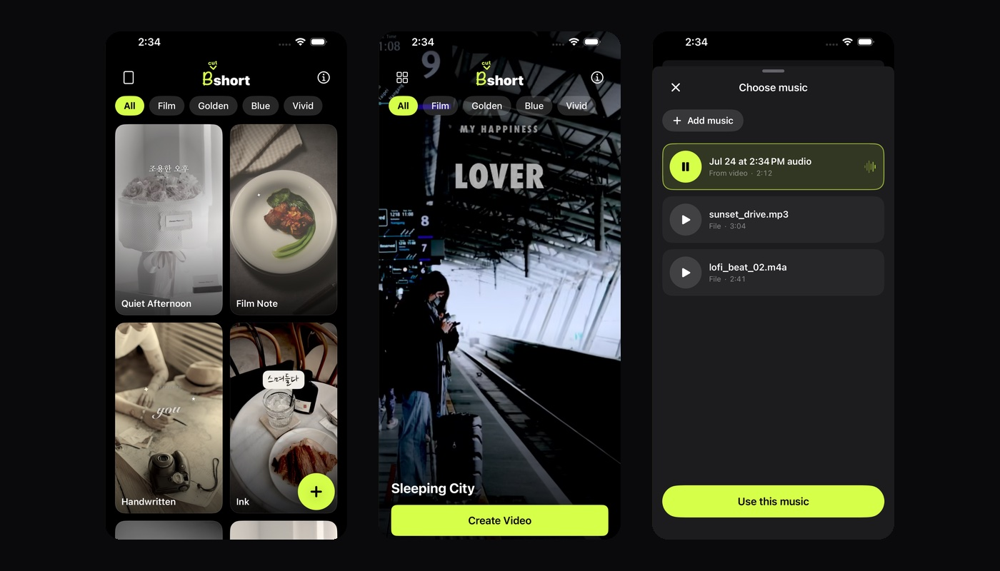
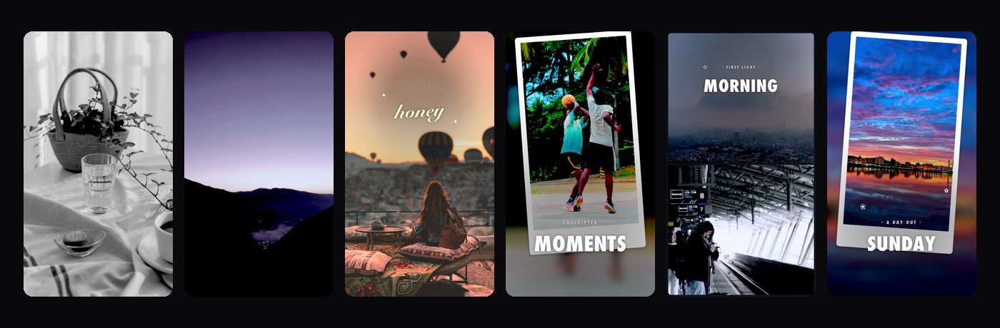
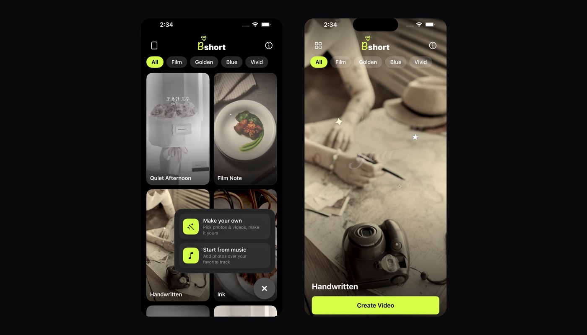

Four moods
Emotional, warm, dawn and activity. The mood is the colour — the same photo reads differently under each one.
No timeline, no keyframes, no account. Choose a mood, choose a few photos, and a finished vertical video comes out the other side — colour graded, typeset and scored.

The idea
Every editor I tried wanted me to become an editor first — drag the clip here, set a keyframe there. bshort has no editing screen on the main path. You pick, and it renders.
What's in it
Emotional, warm, dawn and activity. The mood is the colour — the same photo reads differently under each one.
Eight per mood, and every one has its own grade, hand-tuned. No shared preset doing duty for all of them.
Each template stacks two or three text layers with their own faces, weights and positions, so they don't collapse into one layout wearing different fonts.
Thirty-two tracks, one for each. Nothing is reused, and the preview you tap plays the track you'll get.
Bring your own photos and videos, set how long each one holds, place your words anywhere, and drop in a track from your library.
Compositing happens on your phone. Nothing is uploaded, and it works with the network off.

Where it came from
Every trip ended the same way: a camera roll with two hundred photos in it and maybe three that made it anywhere. The rest were not bad photos. They were just B-cuts, and nothing was ever going to be done with them.
That is the whole name — B-cut + shorts. The app exists to give the other hundred and ninety-seven somewhere to go.
The work went almost entirely into the parts you don't operate: thirty-two colour grades tuned one at a time, type set in layers so the templates stay distinct, a track chosen per template. What's left on screen is a grid you scroll and a button you press.
Privacy
There is no server to send them to. Selection, compositing and export all happen on the device, and the app has no account to sign in to. It is free and carries ads, which means Google AdMob collects the usual advertising identifier and device information — all of it written out in the privacy policy.
Free on the App Store. Pick a mood, pick a few photos, and see what comes out.
